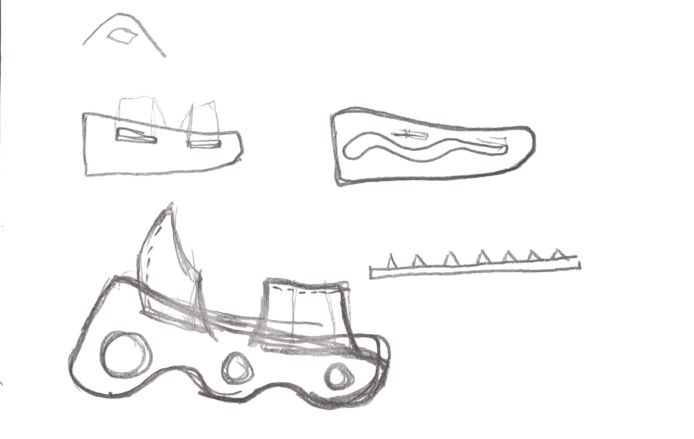
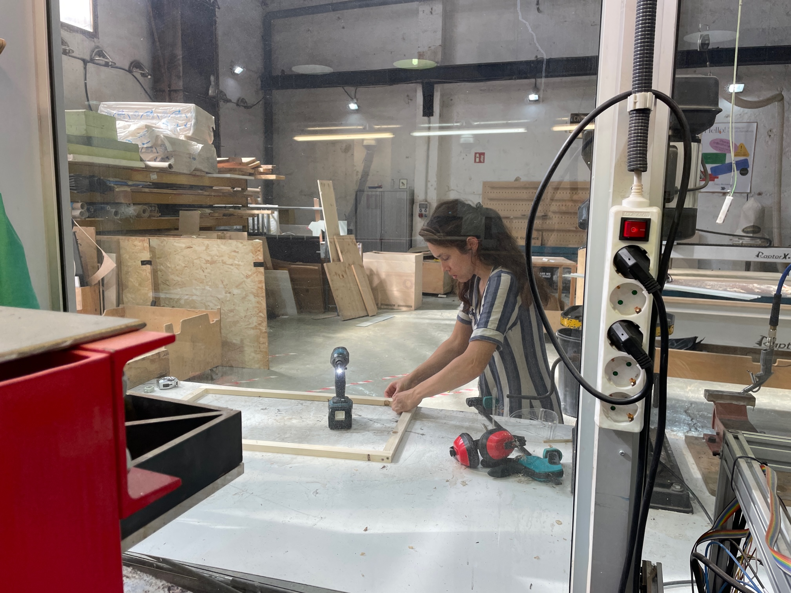

In this microchallenge, the goal was to create an “Integrated prototype” that helps your MDEF Project /Fest and integrates a range of units covered. For this challenge, I teamed up with Julia Steketee and Roberto Broce. You can find the detailed project, steps, and files in our repository here. Though we didn’t have the exact same projects, it made sense for us to work together because we are all focusing on working with mycelium as an alternative material for non-biodegradable plastics. Julia and I are doing this by way of a mycelium shoe, and Roberto is working on a surfboard. Julia and I wanted to take advantage of this microchallenge week to get ahead on fabricating the shoe that we are presenting as part of our final projects. At first I felt the need to incorporate everything we had learned during fab academy and placing more of an emphasis on coding and electronics, but in the end that is not where Julia and I’s interests lie and we found it more useful to use that time during the challenge week to produce and test things we wanted to use for MDEFest.
This challenge felt different than the previous two where I was working with 2 or 3 other people as Roberto was working more independently on his project. Since we were fewer, we were not able to do as much as quickly or multitask as much as we would with more people. However, it was easier to be able to communicate and make plans as we could speak more directly and then go about our business. Julia is also a very organized, task-organized person so I enjoyed working with her which I haven’t really done for a specific project before.
One part I really enjoyed was co-designing the shoe with Julia and passing our designs back and forth late night and then discussing them again the next day to come up with the best design. It was fun to think about this in terms of fabrication and what would work best while working with the mycelium. While Julia was starting on the model, I was 3D printing to try out the grow-lay filament I wanted to purchase to experiment with the concept of bio-wearables and jewelry. We spent a majority of one of the days preparing mixes for biomaterials that we plan to lasers cut once they are fully dry. Our next steps are to develop more wearables and laser cut the materials into shapes and pieces that we can turn into modular wearables and jewelry. Julia then compiled all of our documentation while I put everything into the repository and thought about the scaling part of the challenge task, which was to think about future dissemination in terms of audience, partners, and communication. I actually thought it was interesting to do this and brainstorm with Julia to think about what kinds of effects our projects can have and what discussions might be happening when we share the projects with the public at MDEFest. Overall, I think this project really got me thinking about the end of the masters and what we had learned during these collective challenges.